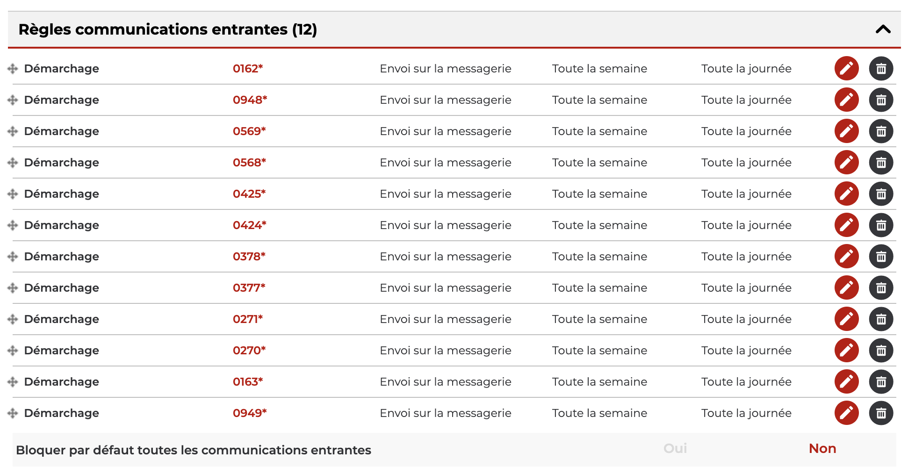

Bloquer les appels de démarchage sur une ligne Free Mobile
Un bookmarklet qui ajoute en un clic, dans votre espace abonné, des règles bloquant les appels entrants des préfixes officiels réservés au démarchage.
Préfixes bloqués
- 0162
- 0163
- 0270
- 0271
- 0377
- 0378
- 0424
- 0425
- 0568
- 0569
- 0948
- 0949
- 09475
- 09476
- 09477
- 09478
- 09479
Les appels de ces numéros sont renvoyés vers la messagerie. Ceci est spécifique à Free Mobile et Free La Réunion. Source : préfixes des numéros de démarchage officiels.
Le bookmarklet
Bloquer les AppelsGlissez-déposez ce bouton dans votre barre de favoris.
Sur iOS, créez un favori, puis remplacez son URL par le code du bookmarklet :
Mode d'emploi
- Installez le bookmarklet :
- Glissez-déposez le bouton ci-dessus dans la barre de favoris de votre navigateur.
- Donnez-lui un nom (par exemple, Bloquer les Appels).
- Connectez-vous sur mobile.free.fr (ou mobile.free.re).
- Activez les « Filtres Appels & SMS/MMS » sur la page des Services si ce n'est pas déjà fait.
- Accédez à mobile.free.fr/account/mes-services/filtres.
- Cliquez sur le bookmarklet que vous avez installé.
- Attendez quelques secondes : un message indique le nombre de filtres ajoutés, puis la page se recharge.

Alternative : l'application Saracroche
Si vous n'êtes pas chez Free, ou pour aller plus loin, l'application gratuite et open source Saracroche bloque directement sur le téléphone les appels de démarchage, à partir des préfixes officiels et d'une liste de numéros signalés. Elle fonctionne quel que soit l'opérateur :
Remarque importante : ce bookmarklet est fourni « en l'état », sans aucune garantie. L'auteur n'est en rien responsable de l'utilisation qui en est faite. Utilisez-le à votre propre discrétion.